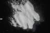

|
|
(For further information on spectroscopy, see:
http://speclab.cr.usgs.gov)
TITLE: Anorthite GDS28 Plagioclase DESCRIPT
DOCUMENTATION_FORMAT: MINERAL
SAMPLE_ID: GDS28
MINERAL_TYPE: Tectosilicate
MINERAL: Anorthite (Plagioclase, Ca end member, Feldspar group)
FORMULA: CaAl2Si2O8
FORMULA_HTML: CaAl2Si2O8
COLLECTION_LOCALITY: Synthetic
ORIGINAL_DONOR: Bruce Hemingway, U.S.G.S.
CURRENT_SAMPLE_LOCATION: USGS Reston, VA.
ULTIMATE_SAMPLE_LOCATION: USGS Reston, VA.
SAMPLE_DESCRIPTION:
The original sample and mid-IR spectrum was described in:
Salisbury, J. W., Walter, L. W., and Vergo, N., 1987, Mid-Infrared (2.1-25µm) Spectra of Minerals: First Edition, U.S. Geological Survey Open File Report 87-263.
From that study, the sample was described as pure.
IMAGE_OF_SAMPLE:

END_SAMPLE_DESCRIPTION.
XRD_ANALYSIS:
Pure Anorthite.
END_XRD_ANALYSIS.
COMPOSITIONAL_ANALYSIS_TYPE: EM(WDS) # XRF, EM(WDS), ICP(Trace), WChem
| COMPOSITION KEYWORD |
Oxide ASCII |
Amount | Weight Percent, % |
Oxide html |
|---|---|---|---|---|
| COMPOSITION: | SiO2 | 43.53 | wt% | SiO2 |
| COMPOSITION: | TiO2 | 0.01 | wt% | TiO2 |
| COMPOSITION: | Al2O3 | 37.36 | wt% | Al2O3 |
| COMPOSITION: | FeO | 0.02 | wt% | FeO |
| COMPOSITION: | MnO | 0.03 | wt% | MnO |
| COMPOSITION: | MgO | 0.03 | wt% | MgO |
| COMPOSITION: | CaO | 19.26 | wt% | CaO |
| COMPOSITION: | Na2O | 0.03 | wt% | Na2O |
| COMPOSITION: | K2O | 0.04 | wt% | K2O |
| COMPOSITION: | Total | 100.32 | wt% | |
| COMPOSITION: | O=Cl,F,S | wt% | #correction for Cl, F, S | |
| COMPOSITION: | New Total | 100.32 | wt% |
COMPOSITION_TRACE: None
COMPOSITION_DISCUSSION:
Microprobe analysis is the average of 10 analyses. See also: Robie, R.A., Hemingway, B.S., and Wilson, W.H., 1978, American Min., v.63, p. 9-123.
END_COMPOSITION_DISCUSSION.
MICROSCOPIC_EXAMINATION:
The sample appears to be pure anorthite with very fine (cryptocrystalline) texture according to:
Salisbury, J. W., Walter, L. W., and Vergo, N., 1987, Mid-Infrared (2.1-25µm) Spectra of Minerals: First Edition, U.S. Geological Survey Open File Report 87-263. avg. grain size = 200um
Abundant vapor bubbles or fluid inclusions, elongate grains sometimes sided by cleavage planes. G. Swayze
END_MICROSCOPIC_EXAMINATION.
SPECTROSCOPIC_DISCUSSION:
END_SPECTROSCOPIC_DISCUSSION.
SPECTRAL_PURITY: 1a2a3a4_ # 1= 0.2-3, 2= 1.5-6, 3= 6-25, 4= 20-150 microns
| LIB_SPECTRA_HED: | where | Wave Range | Av_Rs_Pwr | Comment |
|---|---|---|---|---|
| LIB_SPECTRA: | splib04a r 457 | 0.2-3.0µm | 200 | g.s.= 125µm |
| LIB_SPECTRA: | splib05a r 1075 | 0.2-3.0µm | 200 | g.s.= |
| LIB_SPECTRA: | splib06a r 2557 | g.s.= | ||
| LIB_SPECTRA: | splib06a r 2570 | g.s.= |
{kind=link}